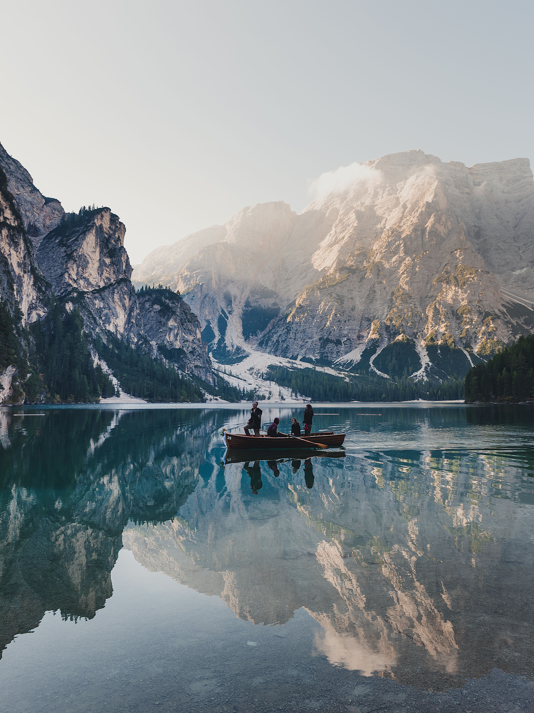

Founder and editor
Mara Ellison
Mara leads Travlr's editorial direction, deciding what belongs in a getaway and what should be left out. She cares most about pacing, arrival moments, and hotels with a sense of place.
Travlr is a small travel studio built by people who care about place, pace, and the quiet details that make a trip feel personal.

Travlr started as a shared habit: collecting the small, specific notes that make a place easier to love. The early ferry. The room with the morning light. The table worth crossing town for.
Today, we shape those notes into considered getaways with a point of view, a clear rhythm, and enough space for the unexpected.
We are an independent travel studio focused on slow, polished getaways: lakeside stays, mountain routes, city meals, and rooms that feel chosen rather than simply booked.
Our work sits somewhere between a journal, a concierge desk, and a very opinionated friend who remembers the good parts. We research, edit, and arrange travel with restraint so the final trip feels clear instead of crowded.
A small group keeps Travlr focused: one eye on the route, one on the room, and one on the meal that makes the day settle into place.
Founder and editor
Mara leads Travlr's editorial direction, deciding what belongs in a getaway and what should be left out. She cares most about pacing, arrival moments, and hotels with a sense of place.
Stay curator
Julian researches rooms, neighborhoods, and routes. His notes are practical but exacting: where the light lands, how the walk feels, and whether the lobby actually makes you want to linger.
Food and field notes
Sofia builds the meal side of each trip, from market mornings to late dinners. She looks for tables that match the destination instead of interrupting it.
Travlr is intentionally small. We would rather publish fewer recommendations and know why each one belongs than fill a page with options that all feel the same.